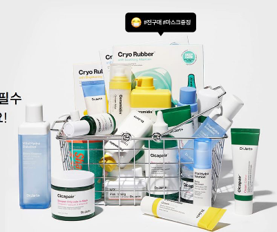
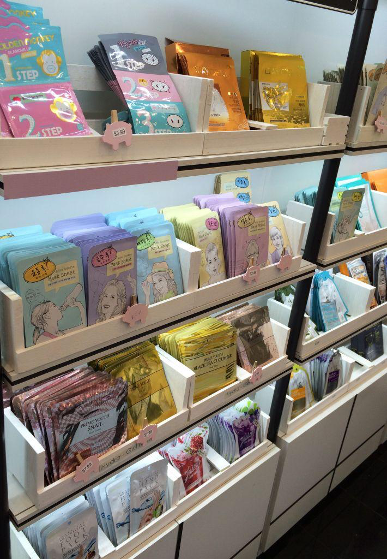

Oдна из самых важных beauty-одержимостей образцовой кореянки – фанатичный уход за кожей. Обязательное
двухступенчатое
очищение, наличие эксфолианта и концентрированной сыворотки на полочке в ванной. На коже не должно быть пор,
она должна
быть чистой и гладкой, похожей на «прозрачное стекло». В этом и заключается цель всех их процедур. И если на
западе и
особенно на востоке процветает индустрия визажа (который скрывает дефекты кожи), то в Корее макияж не столь
актуален,
главное – это ровная, ухоженная и сияющая кожа. И, конечно же, никакого загара. Безупречно белая кожа – это
корейский
эталон красоты.

Корейская косметика. Кореянки используют косметику регулярно и не ждут от нее немедленных результатов.
Например, наносят
солнцезащитный крем 30+ и увлажняющее средство задолго до того, как появятся первые морщинки и пигментные
пятна, чтобы
потом не замазывать их тональным кремом. Другими словами, они больше занимаются профилактикой проблем кожи,
чем их
последующим устранением.
Сегодня Южная Корея выпускает огромное количество продуктов с разными текстурами (бальзамы, сыворотки,
ампулы, спреи)
для всех типов кожи (сухой, жирной, чувствительной, с акне). Именно южнокорейские косметологи изобрели
BB-кремы,
губки-кушены, патчи для глаз и губ и тканевые маски, которыми вот уже 10 лет пользуются женщины во всем
мире.
У кореянок высокие требования – поэтому брендам постоянно приходится использовать инновационные технологии.
Чтобы
удерживать свои позиции на рынке, они вынуждены большое внимание уделять научным разработкам – в стране есть
несколько
крупных научно-исследовательских центров. Один из них – косметический гигант Аmore Pacific, товары которого
уже
представлены в магазинах ОАЭ. Компания выпускает продукцию порядка 33 разных брендов (Amore Pacific, Etude
House,
Mamonde Cosmetics, Innisfree, Laneige и др), с годовым оборотом около 3 млрд долларов. Ритейлмагазин
корейской косметики
Etude House открыт в Дубай Молле.
Можно ли сказать, что корейская косметика лучше, чем западная? Пока она вряд ли может сравниться с
эффективностью
признанных лидеров, таких как La Prairie, Valmont или Filorga, имеющих давнюю историю выпуска anti-age
средств. Но цены
на корейскую косметику значительно ниже, следовательно, продукты более доступны. Например, можно найти
тканевую маску
всего за доллар, при этом она обеспечит прекрасное увлажнение.

К тому же разнообразие продуктов впечатляет. Вы можете подобрать свою персональную линию ухода, которая будет
решать
лично ваши проблемы, а также легко найдете среди корейской косметики продукты без ароматизаторов, химикатов
и парабенов.
Любители корейской косметики ценят ее и за необычные ингредиенты – водоросли, пчелиный яд или прославившуюся
слизь
улиток – муцин. Клинически доказано, что наличие улиточного муцина в косметике замедляет старение кожи. В
чем его
уникальность? Муцин богат коллагеном, эластином, хитозаном, гликолевой кислотой, а также витаминами А, В6,
В12, С, Е.
Все эти компоненты отлично оздоравливают кожу. Именно слизь улитки запускает активную стимуляцию
фибробластов и
омолаживает кожу на клеточном уровне, замедляя процессы старения. Как ее добывают? Очень просто – слизь
собирают после
перемещения улиток, которые таким образом защищают свое нежное тело от различного рода повреждений или
стресса (который
можно создать искусственно). Но не волнуйтесь: обычно косметические улитки содержатся в прекрасных условиях,
их хорошо
кормят и особо не беспокоят. В корейских SPA-салонах даже популярны процедуры, во время которых улиток
помещают на лицо
и они сами двигаются по нему в любом направлении.
Корейская косметика, помимо всех прочих ее достоинств, это еще и великолепное решение для бизнеса. Низкая
цена корейской
косметики позволяет ставить на нее достаточно высокую наценку – и не потерять при этом потребителя. Особенно
хорошо эта
схема работает, если заказывать корейскую косметику напрямую из страны-производителя.